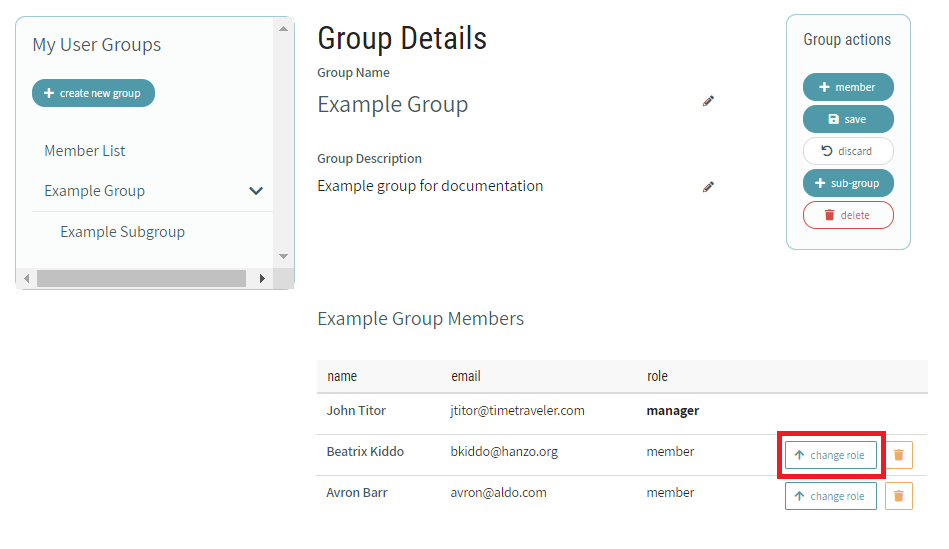
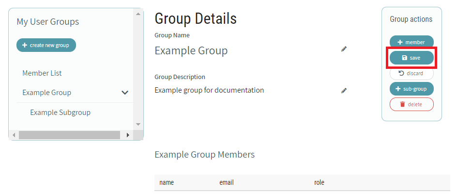

# User Group Management
In the CaSS authoring environment, user groups allow for multiple users to assume a single shared 'identity'. Members of a group are granted access to any CaSS object that the group has been explicitly assigned.
Subgroups can be created within Groups to further organize and define access to CaSS objects for multiple users.
# Accessing the CAT User Group Manager
Important: To access the CAT user group manager, you must be logged into the CAT application.
The CAT user group manager can be accessed at any time by selecting the users and groups icon on the lower left corner of the navigation menu.
CAT User Group Manager - Navigation Menu - Users and Groups
The "My User Groups" list contains options for creating a new group, viewing group members, and accessing existing groups.
To view a list of all group members, click on "Member List" under My User Groups. This only lists users who are already within a group.
# Creating a New User Group
To create a new group, click on the "create new group" button under My User Groups.
A new group is created with a default name and description.
TIP
There may be noticeable processing time when creating a new group. CAT user groups are assigned identity keys that must be generated at creation time. This process may take several seconds.
# Creating a New Sub-Group
To add a sub-group to a currently open group, click on the add "sub-group" button under "Group actions". Sub-groups can be created within Groups to further organize and define access to CaSS objects for multiple users.
A new sub-group is created with a default name and description. The path of the group and the listing under "My User Groups" indicate the parent of the sub-group.
The actions for managing users and editing groups apply to sub-groups as well.
# Managing a User Group
To access existing groups in the current CAT instance, click on the group name under My User Groups to the left of the Group Details.
Group Details show the name, description, and a list of members within the group.
Click on the edit icon next to the name and description to edit either of these properties. When you are done editing, click "done editing" to save changes.
# Group Managers
Group managers can add and remove members and other managers to the group. Managers also share the owner and reader privileges assigned to the group.
TIP
You cannot remove yourself as a manager from the current group
# Add Managers
To add managers to a group, click on the add "member" button under "Group actions" in the top right corner.
In the "Add members" dialogue, select the desired permissions next to the name of the member or members you would like to add to the group. The member icon with a shield, as shown above the check box outlined in red below, represents a manager for this group. When you are finished selecting member permissions click "apply".
# Remove Managers
Group managers can be removed from the group by clicking on the remove icon.
TIP
You cannot remove yourself as a manager from the current group
# Reassign Manager
Managers can be reassigned as a group member by clicking "change role" button.
When a role is changed from manager to member, the list is re-sorted to place the member beneath existing managers in the list.
# Group Members
Group members share the owner and reader privileges assigned to the group.
# Add Members
To add members to a group, click on the add "member" button under "Group actions" in the top right corner.

In the "Add members" dialogue, select the desired permissions next to the name of the member or members you would like to add to the group. The member icon without a shield, as shown above the check box outlined in red below, represents a member for this group. When you are finished selecting member permissions click "apply".
# Remove Members
Group members can be removed from the group by clicking on the remove icon.
# Reassign Member
Members can be reassigned as a group manager by clicking "change role" button.
When a role is changed from member to manager, the list is re-sorted to place the new manager above existing members in the list.

# Saving the Group
Changes to Groups can be saved by clicking on the save button under "Group actions" in the top right corner.
